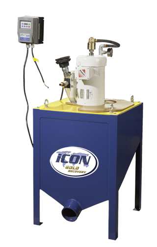

iCON i150 Gravity Concentrator
How iCON Fine Mineral Recovery Works
The iCON Gravity Concentrator is designed to capture all heavy minerals including Gold, Silver and PGMs. It uses a centrifugal field to concentrate very fine, free minerals that are not recoverable using the traditional techniques of small scale and artisanal miners.
iCON technology is based on the batch-type Falcon Gravity Concentrator and designed by the same Falcon engineers that design concentrators for the largest mines in the world.
In operation, material is fed as mixture of milled rock and water into a rotating bowl that includes special fluidized grooves or riffles to capture the heavy minerals.
Periodically, a rich mineral concentrate is rinsed out that requires further upgrading to be turned into a final gold product.
{kind=link}

iCON i150 Gravity Concentrator Specifications: |
|
| Solids Capacity (Max) | 2 tons/hour |
| Slurry Capacity (Max) | 130 litres/min, 34 USGPM |
| Slurry Density | 5% to 65% Solids |
| Max Particle Size | 2 mm |
| G-Force Range | 120 to 150 Gs (50 to 55 hz) |
| Machine Weight | 120 kg |
| Motor Power | 2 HP, 1.5 KW |
| Electrical Specifications | 220 Volt, 1 Phase, 50 or 60 hz |
| Process Water Consumption | 10 to 30 liter/min, 2.6 to 8 USGPM |
| Process Water Pressure | 5 to 15 psi |
| Dimensions | .6m x .6m x 1.3m Tall |
| Rinse Time | 60 to 90 Seconds |
| Capacity of Concentrate per Batch | 1/2 to 1 Kilogram |
| VFD, Soft Start Included | Yes |
We offer two iCON Gravity Concentrators. Click below for more information:
iCON i150 Concentrator - iCON i350 Concentrator
Click below to view all of the iCON Gold Recovery Product lines:
Product Overview - iCON Concentrators
iCON Pumps - iCON Screens - iCON Plants